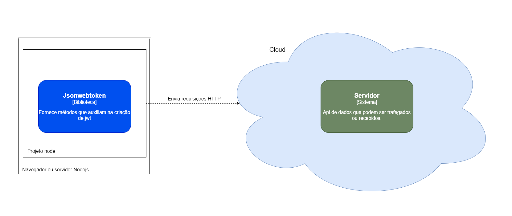
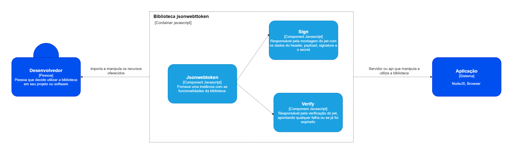

jsonwebtoken - Documentação arquitetural
Autores
Este documento foi produzido por Jonathan Allisson De Lima Silva.
- Matrícula: 117110926
- Contato: jonathan.allisson.silva@ccc.ufcg.edu.br
- Projeto documentado: https://github.com/auth0/node-jsonwebtoken
Descrição Arquitetural – jsonwebtoken
Este documento descreve parte da arquitetura do projeto jsonwebtoken. Essa descrição foi baseada principalmente no modelo C4.
Descrição Geral
JSON Web Token é uma estrutura de dados no formato json, compacto, seguro e pode trafegar na URL sem prejudicar seu conteúdo. Seu conteúdo é composto por claims. As Claims são um conjunto de chave/valor. Fornecem ao client ou API informações sobre o usuário que está consumindo seus serviços. Ele comumente utilizado para transferir dados através do protocolo HTTP.
Objetivos
Oferecer uma forma simples e compacta de transportar dados sigilosos entre aplicações com restrição de espaço como de headers de autorização HTTP e parâmetros de consulta URI. Exemplos de utilização seriam em aplicações com sistemas de autorização e trocas de informações com segurança.
Contexto
jsonwebtoken é uma biblioteca onde os desenvolvedores de software a importam em seus projetos para que possam utilizar suas funcionalidades. Ela é muito utilizada em web APIs REST para fins de autenticação e trocas de dados. Seus dados transportados vão estar codificados em base64 onde será necessário ter um SECRET para ter acesso ao conteúdo completo do arquivo, além de saber caso alguém tenha tentado fraudar o conteúdo.

Containers
Por se tratar de uma biblioteca e não de um software, ele não possui armazenamento de dados local e basicamente possui apenas um container que oferece seus recursos utilizáveis.
Implantação
Pode ser instalado através de algum gerenciador de pacotes(como yarn ou npm) ou por CDN, no caso dessa biblioteca específica, ela é compatível com projetos node. O diagrama ilustra apenas um simples caso de troca de dados via requisição HTTP entre projetos, os quais podem estar no navegador ou em um servidor.

Componentes
Jsonwebtoken possui os seguintes componentes, para fins de compreensão, quando me referir a biblioteca, chamarei de jsonwebtoken e quando for o token em si, de jwt:
- jsonwebtoken: Fornece uma instância com todas as funcionalidade da biblioteca.
- Sign: Responsável pela montagem do jwt com as dados do header, payload, signature e o secret.
- Verify: Responsável pela verificação se o jwt, apontando qualquer falha ou se já foi expirado.

Visão de Informação
Com o intuito de descrever informações importantes que são manipuladas, coletadas, armazenadas e destribuídas pelo sistema, descrevi com o gráfico abaixo, como é realizada a criação de um token jwt com os dados fornecidos e as ferramentas da biblioteca.